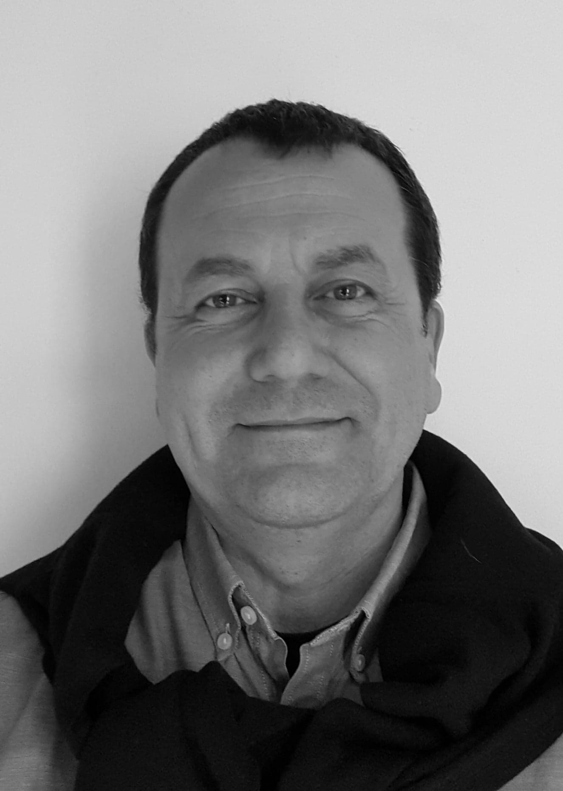

Santé Psy Étudiant
Jusqu’à 12 séances gratuites par année universitaire, sans avance de frais, pour les étudiants.
Tous les entretiens peuvent avoir lieu au cabinet ou en téléconsultation.
Voir les informations à préparer →Consultations à Villard-de-Lans et en téléconsultation.
Contacter le cabinet
Accompagnement des enfants, adolescents et adultes : anxiété, humeur, relations familiales ou scolaires, harcèlement, situations traumatiques, trouble de stress post-traumatique complexe (TSPT-C), transitions et épuisement.
Accompagnement également des personnes présentant des troubles du neurodéveloppement ou des profils atypiques (TDAH, TSA, troubles DYS, HPI), ainsi que des profils associant autisme et TDAH (AuDHD*).
* AuDHD est une appellation encore non officielle pour l’instant, désignant l’association de l’autisme et du TDAH. Elle fait écho aux recherches récentes sur la coexistence de plusieurs atypies chez une même personne (Craddock, 2025 ; Peyre et al., 2026).
L’approche s’appuie sur les thérapies cognitives et comportementales (TCC). L’accompagnement est adapté à chaque personne et tient compte des connaissances scientifiques actuelles.
Une attention particulière est portée à l’analyse systémique des situations complexes, pour comprendre comment les relations, le contexte et les réactions de chacun contribuent aux difficultés et aux possibilités de changement.
Les rubriques suivantes précisent les informations à préparer. Aucun formulaire n’est rempli ou transmis sur ce site.
Jusqu’à 12 séances gratuites par année universitaire, sans avance de frais, pour les étudiants.
Tous les entretiens peuvent avoir lieu au cabinet ou en téléconsultation.
Voir les informations à préparer →Jusqu’à 12 séances par année prises en charge par l’Assurance Maladie et votre mutuelle.
Chaque séance coûte 50 € remboursée entre 60% et 100% selon votre couverture
Le premier entretien a lieu au cabinet. Les séances suivantes peuvent se dérouler en présentiel ou en téléconsultation.
Voir les informations à préparer →Consultations en dehors des dispositifs Santé Psy Étudiant et Mon soutien psy.
Moyens de paiement : espèces, chèques ou virement bancaire. RIB transmis sur demande.
Contacter le cabinet →Informations officielles : Santé Psy Étudiant.
Informations officielles : Assurance Maladie.
Vous pouvez communiquer les informations administratives au cabinet selon les modalités convenues, notamment par téléphone lors du rendez-vous. N’envoyez pas de renseignements médicaux sensibles par courriel ordinaire.
Pour prendre rendez-vous, merci d’écrire au cabinet à psy@sylvainroypsy.fr
Si besoin, vous pouvez joindre le secrétariat au 04 76 94 92 87.
Du lundi au vendredi de 8 h à 12 h 30 et de 13 h 30 à 18 h 30.
Au cabinet
12, place des Martyrs
1er étage sans ascenseur
38250 Villard-de-Lans
Merci de vous connecter quelques minutes avant l’heure du rendez-vous et d’attendre que M. Roy vous admette dans la salle.
Accéder à la téléconsultation